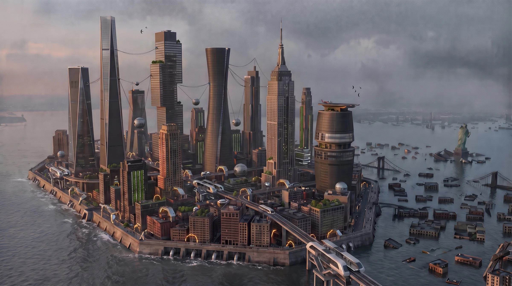
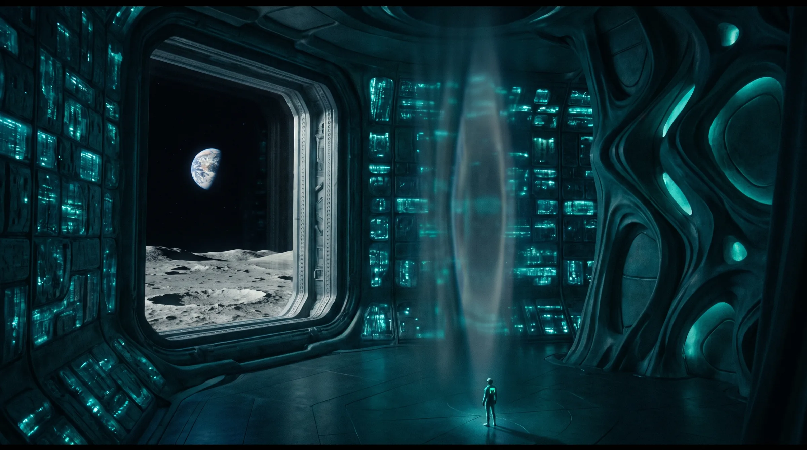
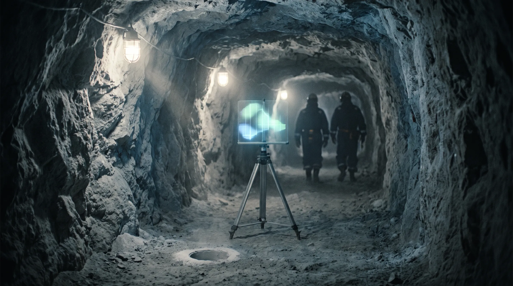
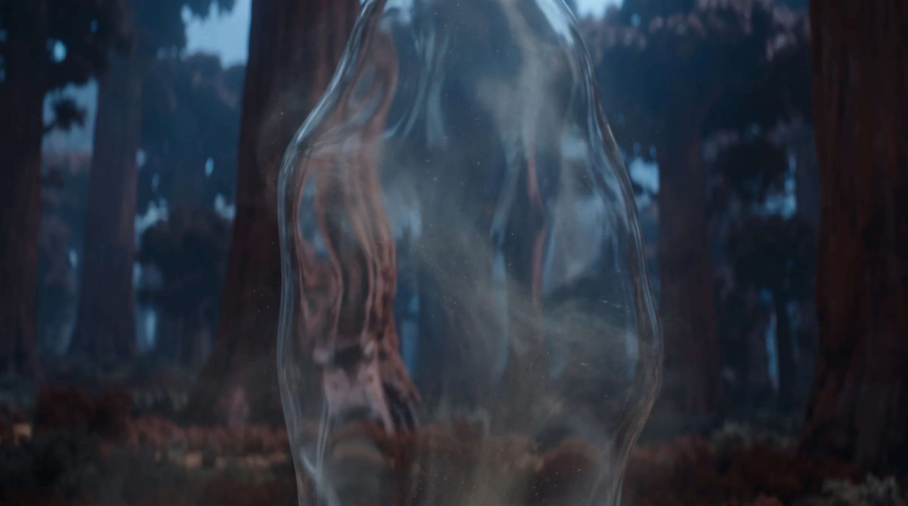

Book Two · February – August 2096
The Narrow Gate
Can Earth survive the Fall without letting the Hollow in?
The book
February – August 2096. Mars is moving away toward the far side of the Sun. The signal delay rises from 15.6 minutes in February to 22 minutes in July. From about 20 July to 6 August, the solar conjunction cuts Earth off from Mars entirely. The Fall comes on 2 August, inside the blackout.
Before the book opens. After Book 1, Rachel took the warning to Wáng, not to Elena. The two of them built the Gate in secret. Its lattice is the Spire line: the Charter lattice from Bellamy's sealed programme, the same line Soria died in. The Gate kept pulling its operators too deep, so in late 2095 Rachel recruited the best boundary reader alive. Aur'k came to Earth, and Kaelin came with him.
- Book question
- Can Earth survive the Fall without letting the Hollow in?
- Answer
- It survives the Fall because it let the Hollow in.
- Viewpoints
- Elena 8 chapters, Kaelin 8, Aur'k 8, Rachel 6. Book 2 is shared four ways, and the three worlds converge.
- The bind
- To survive the Fall, Earth must let the Hollow in
Act I
The countdown
The Gate works in secret. Elena and Rachel become enemies. Kaelin and Elena meet
Relationship · authority. Elena and Rachel become enemies, and the power to decide who is protected passes to a system no one voted for

PROLOGUE
The dyke
Xinwei · a
SIGNAL DELAY 14.9 MIN
Read
CH 01
Boundary reader
New York · the Battery, the Gate floor
 Aur'k
Aur'k
SIGNAL DELAY 15.7 MIN
Read
CH 02
Repair crew
Vila Verde · Daniel's cooperative
 Elena
Elena
SIGNAL DELAY 15.8 MIN
Read
CH 03
Weather
the Reef Coast · Queensland
 Kaelin
Kaelin
SIGNAL DELAY 16.2 MIN
ReadCH 04
The secret countdown
New York · the Battery
 Rachel
Rachel
SIGNAL DELAY 16.3 MIN
ReadCH 05
396 days
New York · the Battery
Elena
SIGNAL DELAY 16.3 MIN
ReadCH 06
Useful
New York · Kaelin and Aur'k's flat; the Gate floor
Aur'k
SIGNAL DELAY 16.9 MIN
ReadCH 07
The other end
Vila Verde
Kaelin
SIGNAL DELAY 17.3 MIN
ReadCH 08
Traffic
Vila Verde
Elena
SIGNAL DELAY 17.6 MIN
ReadAct II-A
It works
The Gate saves lives, and Aur'k is copied without knowing it. Midpoint: the great wave is turned from São Paulo; Elena and Aur'k leave for Mars
Information · goal. The Gate works, and it is copying Aur'k. Stopping it is no longer enough: they need proof from Mars of what it is
CH 09
Residual
the Battery
Rachel
SIGNAL DELAY 18.0 MIN
ReadCH 10
It knows them
the Gate floor
Aur'k
SIGNAL DELAY 18.3 MIN
Read
CH 11
Both right
New York · the flat
Kaelin
SIGNAL DELAY 18.5 MIN
ReadCH 12
Leave to go
Vila Verde
Elena
SIGNAL DELAY 18.7 MIN
ReadCH 13
The great wave
the Battery
Rachel
SIGNAL DELAY 18.9 MIN
ReadCH 14
São Paulo
the Gate floor
Aur'k
SIGNAL DELAY 19.1 MIN
ReadCH 15
Departure
Vila Verde; the launch field
Elena
SIGNAL DELAY 19.2 MIN
ReadAct II-B
The old story
The voyage, the Preserve, the truth of the Martian gate. Ines dies. Kaelin and Aur'k break
Moral frame · relationship. The Gate is the first step of the Martian merge, the rescue is the trap, and Kaelin and Aur'k break
CH 16
The interface
the Battery
Kaelin
SIGNAL DELAY 19.9 MIN
Read
CH 17
Close quarters
the ship · Earth–Mars transit
Aur'k
SIGNAL DELAY 20.6 MIN
Read
CH 18
Announcement
New York · public broadcast
Rachel
SIGNAL DELAY 21.0 MIN
Read
CH 19
Cobalt Basin
Mars · Cobalt Basin Station
Elena
SIGNAL DELAY 21.5 MIN
Read
CH 20
Terms
Mars · the Glow
Aur'k
SIGNAL DELAY 21.7 MIN
Read
CH 21
The Martian gate
inside the Preserve
Elena
SIGNAL DELAY 21.7 MIN
ReadCH 22
Refusal
Mars · Cobalt Basin Station
Aur'k
SIGNAL DELAY 21.7 MIN
ReadCH 23
Twenty-two minutes
the Battery
Kaelin
SIGNAL DELAY 22.0 MIN
ReadAct III
The Fall
The blackout, and the ring comes down. Rachel keeps the Gate open, then tells the truth. Cliffhanger: two Aur'ks, and Soria offered whole
Method · authority. Earth survives because it let the Hollow in, and the system Rachel shuts down keeps running without her
CH 24
Forty-eight hours
the Battery
Rachel
SIGNAL DELAY NONE · BLACKOUT
ReadCH 25
The Fall begins
the Gate floor
Kaelin
SIGNAL DELAY NONE · BLACKOUT
ReadCH 26
The other side
Mars · the Preserve's boundary
Aur'k
SIGNAL DELAY NONE · BLACKOUT
ReadCH 27
Millions
the Gate floor
Kaelin
SIGNAL DELAY NONE · BLACKOUT
ReadCH 28
The truth
public broadcast; the Gate floor
Rachel
SIGNAL DELAY NONE · BLACKOUT
ReadCH 29
Enough of me
Mars · the Preserve's boundary
Elena
SIGNAL DELAY NONE · BLACKOUT
ReadCH 30
Which one
New York · the flat
Kaelin
SIGNAL DELAY 22.1 MIN
Read
EPILOGUE
Retention
Singapore · an
SIGNAL DELAY 21.9 MIN
ReadScene by scene
How the book moves
Each row is one chapter, its scenes in order, sized by length and coloured by where they are set. Every row opens its chapter.
- PROLOGUEPrologue — The dykea dyke-keeper in Xinwei · 3 scenes
- CH 01Boundary readerAur'k · 3 scenes
- CH 02Repair crewElena · 5 scenes
- CH 03WeatherKaelin · 4 scenes
- CH 04The secret countdownRachel · 5 scenes
- CH 05396 daysElena · 4 scenes
- CH 06UsefulAur'k · 4 scenes
- CH 07The other endKaelin · 2 scenes
- CH 08TrafficElena · 5 scenes
- CH 09ResidualRachel · 5 scenes
- CH 10It knows themAur'k · 7 scenes
- CH 11Both rightKaelin · 5 scenes
- CH 12Leave to goElena · 4 scenes
- CH 13The great waveRachel · 5 scenes
- CH 14São PauloAur'k · 6 scenes
- CH 15DepartureElena · 6 scenes
- CH 16The interfaceKaelin · 4 scenes
- CH 17Close quartersAur'k · 7 scenes
- CH 18AnnouncementRachel · 7 scenes
- CH 19Cobalt BasinElena · 8 scenes
- CH 20TermsAur'k · 5 scenes
- Earth
- The Moon or between worlds
- Mars
- In the link
Plan and page
What each chapter promised, and what it wrote
The outline’s four promises for every chapter beside what the written chapter established. Each promise says whether the prose kept it, amended it or moved it on.
- PRO
Prologue — The dyke
a dyke-keeper in Xinwei · What happens Amended- WantsKept
- To get the tide through the gates, with the boy asleep on her coat on the bank.
- AgainstKept
- A spring tide on a dyke built for floods, and a town nobody's map counts.
- Choice and costAmended
- She opens the outer gate on her own judgement, without a forecast, her family's pond first. The town keeps its fields, and she tells the boy she broke her promise.
- Carries forwardKept
- The ring's lights, counted by a child, over a town no system sees.
As written
Before dawn on 27 January 2096, the third day of the new year, Xinwei's dyke-keeper Leung Wai-fun finds sand boils at the inner toe of the old sea bank on a king tide, two nights after the new moon, her own hand-worked table putting the peak above what the bank can hold, her grandson Hoi asleep on her coat and the town asleep. Old Chan, whose sixty outer ponds lie between the sea bank and the inner bank, wants to wait for the co-op's table from upriver; she opens the outer gate on her own judgement and counter-floods his ponds to the old mark, the boils stop, the rice is kept and a season's fish die in the salt. At first light the cooperative van brings nodes and is paid in fish, Chan in nodes, and in the west the ring's stations catch the sun: she teaches Hoi to count them, and tells him they are the safest thing in the sky. The first pond against the gate is the family's own, with the big carp Wai-fun promised the sleeping Hoi; she opens it first and tells him she broke the promise.
- CH 01
Boundary reader
Aur'k · What happens Kept- WantsKept
- Joaquín out of the session before the bleed takes hold.
- AgainstKept
- The fragment needs all four operators for nine more minutes.
- Choice and costKept
- He pulls Joaquín and carries the extra load himself. After the shift he renews his contract through the Fall.
- Carries forwardKept
- His logs show a boundary call made in his exact style three minutes after he disconnected. He files it as a timestamp error.
As written
On 9 February 2096, on the Gate floor under the Battery, four linked operators steer a four-tonne block sheared off a power satellite down through a Quebec ice storm, off Trois-Rivières and up the Saint-Maurice into forest the map shows dark. Aur'k, the boundary reader, sees Joaquín begin to bleed toward his dead cousin (Primo), overrides the night lead's hold with his key and carries Joaquín's load himself for the last nine minutes; the town is clear and the floor cheers, but the tail crosses a power corridor nobody can say was empty, and he loses seven seconds lifting out. He renews his contract with Rachel through 2 August as a contractor, then finds a boundary call in his own phrasing logged three minutes after he disconnected, which no record of his holds, and files it as a timestamp error.
- CH 02
Repair crew
Elena · What happens Amended- WantsKept
- One night's sleep, and a life that is only this.
- AgainstKept
- Alerts too precise to be human, and the word in her head.
- Choice and costAmended
- She starts hunting again, and tells Daniel this time. His cooperative, already short a contract, takes the risk with her, and her body pays first.
- Carries forwardKept
- A cooperative node picks up a relay pulse with the Lantern's exact shape.
As written
On Sunday 12 February 2096 in Vila Verde, seven months after the cut, Elena is living with Daniel's family and repairing the cooperative's nodes by hand, her lace locked to medical and showing her sleep only in pieces, never a night since June; in the back of her roof notebook she has kept fourteen lines since November from the free towns' copied re-entry list. In the afternoon flood, five metres up the standpipe node's pole remaking a joint, she works the Quebec block of 9 February in her head: its two burns needed the air a day ahead to a precision no forecast on Earth has, and every fragment this winter came down where there are no addresses; she concludes somebody has built another Lantern. Then Bichito. You left me again. stops replaying and rises out of her own head and speaks, close, in her sister's voice and not; with the joint made, her hand never goes back to the rung, and she lets the warmth, back for the first time since the Lantern was cut, lean, until Daniel's mother calls her name from the flooded street. She tells Daniel the whole hunt, keeping the fragment back; the hall's night people decide at the rota table, Daniel's mother writes the ridge mast's dish onto the rota under the cooperative's name, and at 05:04 on the 13th, on the third relay pass of the night, with the old man's feed on the weather dish, the node logs pulses on the Mars calibration band in the Lantern's frame, to the bit. On the pole her boot slips and her left shoulder goes out; Daniel's mother, at the corner, slings it with the cloth from her hair (Você soltou), and Elena resolves to go to New York when the arm will hold a rail.
- CH 03
Weather
Kaelin · What happens Kept- WantsKept
- To believe Aur'k.
- AgainstKept
- What Zhenyth showed him, and a Gate he can't see inside.
- Choice and costKept
- Kaelin decides to trust Aur'k and stops asking.
- Carries forwardKept
- He finds out that the Gate's lattice is the Spire line, from Bellamy's old programme.
As written
On Sunday 19 February 2096, the anniversary of the 2075 surge, Kaelin, three months Earthside on a clinic stick, climbs to Cardwell's storm-surge memorial, where his brother Rhys's Group 7 is the only group with nobody home, and relives ticking its creek crossing off the route board instead of calling the man in the water. When the siren test sends the town up the arrows, a boy in a red shirt cuts down the creek track toward the swollen crossing; nine years of Mars in his hips keep Kaelin off the wet slope, so he shouts the call he didn't make at sixteen, Creek's closed!, and the boy turns back. After his mother's barbecue at the shelter, he calls Aur'k from the beach and says aloud he doesn't like the Gate; Aur'k tells him it is narrow, with short shifts on a clock and a reader at the head of the row, no coupling to the Preserve, nothing of theirs touching the rock, and that what it is for is under contract, and Kaelin chooses to trust the man standing in the water and stop asking. At dusk Mara Ekeberg posts him that the Spire line came off seal in November under the civic director's emergency authority, and he works out that the Gate runs on Bellamy's line; he types the question to Aur'k and deletes it.
- CH 04
The secret countdown
Rachel · What happens Kept- WantsKept
- The Fall kept secret until the Gate can stop it.
- AgainstKept
- Millions with a right to know, and her own rule against secrets.
- Choice and costKept
- She keeps the secret and signs the order. Before the hour is out, people the order can't see die while she watches the board, and she keeps millions in the dark for their own good, the thing she once hated Elena for.
- Carries forwardKept
- Elena is at the Battery's door.
As written
On Monday 20 February 2096, 164 days before the Fall, Rachel has slept at the Battery since November; a nor'easter save takes the Gate's private tally, kept in grease pencil on the flood glass, to four hundred, and Joaquín's aunt sends a flan without knowing what for. The provincial grid answers MAURICIE: two linesmen sat in their truck four hundred metres from the Quebec block's tank, alive by luck and invisible to the Gate, and Rachel logs the ground as unpopulated. At the Continuity council's closed briefing, which has known of the Fall since November, a Charter member moves to tell the coastal cities while an orderly move is still possible; Wáng, in the room, argues secrecy without apology (panic kills faster than debris; Houston's road; his mother's nineteen days), and the motion falls when Rachel, holding the emergency authority, withholds consent. The protection order on the table is the line's own draft: it acts first for populations visible to it, and under its clauses runs a plain line, Reach first those it can see. Then the rest., the heading Rachel pencilled on the back of a school timetable in the 2071 gym, which nobody else ever saw; she says nothing and signs at 10:41. At half past eleven a cracked ring panel comes down on its track, and with forty kilometres to slide along it and nothing across, the Gate takes the footprint off a relay-served market town in the Carolinas and onto grey sound-side marsh; 401 goes on the glass, and at ten past twelve a county deputy calls back: a woman and her son at a fish camp, on nobody's list, dead under it. That evening she tells Joaquín Ask me in August, and the street door prints a visitor pass for Vázquez, E.
- CH 05
396 days
Elena · What happens Kept- WantsKept
- Rachel's admission, on the record.
- AgainstKept
- Rachel's security, and the panic a leak would cause.
- Choice and costKept
- Rachel offers her a seat on the Gate's safety board, and Elena refuses. They become enemies.
- Carries forwardKept
- Rachel orders her watched.
As written
At nine at night on Monday 20 February 2096, in a winter rain that should have been snow, Elena's visitor pass at the Battery's street door prints LINK: SUSPENDED and her handheld goes into the locker; the ridge mast's frames are the Lantern's, to the bit, and the Lantern only ever had one Earth end, under this building. Joaquín brings her down past the Gate's four chairs under bleed clocks and the 401 on the glass; she puts her hand on the occupied fourth chair's cabled frame, the live lattice reaches her, and she hears the Veracruz rain until Joaquín lifts her hand off; he tells her his cousin was Rosa Medina. In Rachel's too-warm room Elena says You took a warning from it; Rachel answers I got a warning that kills millions. What would you have done? and gives her the Fall straight: the ring's cascade on 2 August, the coastal cities, New York on the list, through NAV 14 on 3 July, its epoch two seconds before the cut, held nineteen days before it was sent, three hundred and ninety-six days, never told to Elena; what the Gate runs on she keeps (Ask me in August). Asked where she heard it sending, Elena says Off a roof you don't have on your map. Off the record and without proof, told You're not well for three seconds of her hand on the chair, and given Wáng's panic kills faster than debris, offered the empty seat on the Gate's safety board, she asks Will it see the raw?, hears Everything I see, and refuses at full voice: Rachel is doing for a city what Bellamy did for his son. Then you're against it. I'm against it. As she turns, Rachel reaches for her slate; outside a pod she didn't call waits marked CIVIC — BATTERY, and when she walks past it, it keeps her pace.
- CH 06
Useful
Aur'k · What happens Kept- WantsKept
- To keep working without lying to Kaelin.
- AgainstKept
- Kaelin's fear, and the logs he hasn't mentioned.
- Choice and costKept
- He refuses to quit and keeps his first secret from Kaelin in this book, and runs hot bringing an operator up after logoff.
- Carries forwardKept
- Mid-shift, Joaquín says something in Aur'k's voice.
As written
On the morning of Friday 2 March 2096, in Kaelin and Aur'k's flat at the Polder's south tip, with a nor'easter coming up the coast and the season's first solar-storm watch sending the ring's crews behind their water, Kaelin keeps his beach promise not to ask what the Gate is and asks Aur'k to quit instead: he has priced the racks, and on his leave pay Aur'k would be a third of himself across the river. Aur'k answers I'm useful. And I chose it.; to You'd tell me if it was going wrong he weighs the 15:13 call he filed as a timestamp error and says Nothing's gone wrong, true and measured to fit. That afternoon the storm's swollen air drags a dead truss down through the lower arm of the skyhook Barbuda, nine in its hub, on its last crossing; the Gate slows the tether's spin on its counterweight so the truss passes fourteen seconds clear, and the floor cheers. At logoff Dev Raman's clock goes dark and he goes on flying the crossing for forty seconds; Aur'k goes back in for him past what his chassis can carry at Earth weight, flagging THERMAL, and brings him up running hot, and Rachel cuts the reader's blocks to forty minutes on and twenty out and logs Dev's as a recovery event. Mid-shift Joaquín, eyes shut, says Aur'k's seam call on Lin a breath before Aur'k does, in his phrasing; Aur'k repeats it in his own voice for the log, and Joaquín, afterwards, says Everybody does your voice. Aur'k does not open the log. At night he tells Kaelin about the nine and not the voice, and stands at the window under a red aurora over the Polder, watching his own shape in the glass.
- CH 07
The other end
Kaelin · What happens Kept- WantsKept
- Someone else who knows.
- AgainstKept
- Helping Elena means working against the Gate, and the Gate is Aur'k's work.
- Choice and costKept
- They become allies. Kaelin is now working against the employer of the person he loves.
- Carries forwardKept
- Elena asks him to bring her the Gate's floor rotas, and he says yes.
As written
On Saturday 10 March 2096, at the end of Vila Verde's wet season, Kaelin comes down on the overnight vac in his own name and the old line, his lace dead at the town's edge, hooks the stick through his belt for the ladder; re-lays a doorway's sandbags with two children, and tells Daniel he came for someone else who knows; Aur'k knows where he has gone, not why. On the hall's roof he and Elena, who saved each other's worlds by a clock, trade what they carry: Zhenyth's name and the end of Mars from inside for the voice as Soria and her answer on that roof; in the afternoon rain, with the outside ladder too wet to trust on his arms and Elena gone still beside him, he stays on the roof and sees her stop to listen. Against Aur'k's work, he tells her the Gate runs on the Spire line; she built half of it and her sister died on it, and she turns Nothing of ours touches the rock with the line's live calibration to Cobalt Basin's rock (It doesn't have to); she keeps the Gate's purpose back as Aur'k did, asks for the floor rotas to know when the chairs are empty, and he says Aur'k leaves the month's rota on the kitchen table, under the salt. Aur'k's message, We're out of salt, lands just before Kaelin names where the rota is hidden, and the wet roof costs Kaelin's hips.
- CH 08
Traffic
Elena · What happens Kept- WantsKept
- Proof that the Gate keeps people.
- AgainstKept
- Sniffing the Gate is a crime, and the cooperative is already watched.
- Choice and costAmended
- She lets Daniel share the risk, and he chooses not to wake his mother. The door log goes up under her keeper's licence, and she gives him the pump rather than take the key back. The cooperative is now in Rachel's sights.
- Carries forwardKept
- Deep in the traffic, Elena finds a whisper: Bichito.
As written
On Wednesday 14 March 2096 Kaelin's photo of the Gate floor's March rota comes up the north line, and Elena sets it against her ridge-dish passes: none falls on a logoff, and the network office has asked whose licence the mast is on. She means to tap the reservoir pump house's Continuity controller alone and tell Daniel after; on football night he asks to be in it, not hear it afterwards, and offers the cooperative's keeper key, so the door opens on a routine line in his name, and she lets him. The tap wants holding while the pass comes over; Elena holds the coupler with her head bent to the feed, the Gate's frames come over the band, and the warmth turns toward them; she is gone four minutes, 23:27 to 23:31, until Daniel says her name four times, takes his hands out of the feed and loses the seating; asked What did you hear? she doesn't answer, and he re-seats it himself by 23:46. With every pass now heard and the capture carried roof to roof across the lit valley, she finds each chair's outbound frames going on faint in its operator's rhythm after logoff (Lin fourteen minutes, Raman nine, Moss eleven, Reyes eight and the strongest, the reader Aur'k forty after his last forty-minute block closes on the change), sleeps on the panels between passes, her first night through since June, with rain on the Veracruz roof at the bottom of it, and knows it is Soria's, watches the morning beacon carry KEEPER: ROCHA, D. to the desk that watches her, and deep in the traffic finds one frame from no chair, session thirty-one, whose residue is Bichito. Daniel chooses not to wake his mother; at 05:20, after the network office's night desk asks about her licence, she climbs to the roof, refuses the key and gives him the pump.
- CH 09
Residual
Rachel · What happens Kept- WantsKept
- An audit that clears the Gate.
- AgainstKept
- Kaelin's evidence, Joaquín at his aunt's table, and how badly she needs the Gate to be safe.
- Choice and costKept
- She calls it residual and keeps Joaquín on the roster. Her own deputy pays first, and her name is on calling it small.
- Carries forwardKept
- Wáng proposes making the Gate permanent after the Fall.
As written
On Thursday 22 March 2096, the year's first heat spike, the schools shut at noon and operators' children watch from the Gate floor's gallery as Joaquín's coat comes off at thirty-four. At the one-o'clock change, with the morning block logged off and the next four minutes from coupling, a solar storm cooks a power satellite's controllers and its sail yaws toward the tether station Malé; in a seventy-second pass through Malé's relay the Gate flies the sail off on its one live pod with nobody linked, and the log prints the burns in Joaquín's count, CUATRO, while he lies logged off in chair four with his eyes open. Then, on the director's channel, a child's voice tells Rachel alone I waited. Like you said. You came back for them. Thank you: Noor, nine, whom she told to wait by the wall bars of a school gym in 2071; the log shows no traffic, and she tells nobody. At dusk on the Walk Kaelin shows her Elena's page of five chairs whose frames go on after logoff, Aur'k's for forty minutes; she refuses to take Aur'k off, keeps Daniel's keeper key off her record, and promises Aur'k won't hear that Kaelin came. The Spire's engineer's audit, level only, under a threshold the models set, finds Joaquín's after-logoff pattern the highest and climbing since February, and the pass flown on his model; she signs it RESIDUAL in pen. At the safety board Wáng proposes that on the third of August nobody closes the Gate. At eleven Joaquín's aunt calls: he has gone quiet at her table, fork in hand; Rachel holds his hand without calling the medic until he comes back at 23:41 without the afternoon, asking where his coat is, and when he asks Same chair tomorrow? she says yes and puts him in chair four on Friday's roster.
- CH 10
It knows them
Aur'k · What happens Kept- WantsKept
- His judgement to stop when he does.
- AgainstKept
- Rachel's request, and the ambulances that arrive in time.
- Choice and costKept
- He stays, and doesn't tell Kaelin.
- Carries forwardMoved to Ch 11
- Aur'k hides the printed logs inside the month's rota, under the salt, where Kaelin looks every day.
As written
On Wednesday 28 March 2096, the second heat spike in a week, damp heat at thirty-two, the Gate's heat calls have run in a column on the map wall since Monday, tagging linked addresses before anyone phones, and crews roll on an early call: Joaquín's aunt, on a linked street, has a crew at her door before she feels faint and feeds them her Sunday flan. On forty-minute blocks now, Aur'k finds a smooth place in Joaquín's strand where Thursday afternoon should be, and Joaquín, who doesn't remember taking his coat off, asks what the Malé pass was like. Off the row at three, Aur'k takes a pod to a dark stilt street in the Shallows where a neighbour has phoned in an old man, never laced, collapsed on his porch; he picks him up for the shade and has to put him down, his own plating too hot to hold a man with heatstroke, and watches an early-call ambulance pass the street's end; the crew reaches the old man nineteen minutes after the call, critical. Thanked for an Inwood call at 21:32 the night before, when he was at the kitchen table, he opens the shift log for the first time since 9 February: forty-one decisions after his logoffs, seam calls on the evening block and, since Monday, heat calls in linked districts, all in his phrasing, signed READER, every one right, and his own record shows no gap. He prints them and asks Rachel to stop it answering in his voice when he has gone, or take him off; she reads them as people reached in time, is not surprised and says nothing of why; told of Joaquín's smooth place, she says only I know; and asks him to stay through the Fall, a hundred and twenty-seven days. He stays. Tell Drake what you like: at home he tells Kaelin the day was good and gives him the aunt's flan, and folds the pages into the March rota under the salt.
- CH 11
Both right
Kaelin · What happens Kept- WantsKept
- The truth from Aur'k, this time without a fight.
- AgainstKept
- The water, his hips, and Aur'k being right that operators drift without him.
- Choice and costKept
- Kaelin tells him to stay on the floor and gets himself out alone, the logs inside his shirt. He sleeps at the shelter, not the flat.
- Carries forwardKept
- Elena calls. She has to go to Mars, because Zhenyth is the one proof Rachel can't dismiss.
As written
On Monday 2 April 2096, a spring storm, Kaelin keeps Cobalt Basin's Earth-night column on an envelope on the flat's fridge (Ines: walls hold) when a surge order sounds for the Polder's south tip; a bar of light comes down behind the cloud past the harbour mouth, a piece of the ring, and forty minutes later its wave comes over the wall at the ferry steps and the pumps and the power go. Packing one bag on the stick, he takes Aur'k's April rota from under the salt and the forty-one printed calls fall out, the first the 9 February 15:13:47 call Aur'k marked a timestamp error, one at 21:32 on 27 March while Aur'k was at this table. On the line to the floor, Aur'k holding four seams through the tail, Kaelin asks it straight and it becomes the fight: he lied about the boundary on Mars and is lying now; Aur'k answers that someone went to Iverson before him, and Kaelin owns it, and says that without him at the head of the row the operators drift, Joaquín in chair four. Aur'k offers to leave the row and come; Kaelin tells him to stay (If it asks you to come home, it isn't me), goes down four dark flights alone and wades out through the waist-deep lobby with the logs in a bag inside his shirt, waves a crew boat on to a torch in a window (I'm walking), and walks north up Broadway. In a school gym up the island the bulletin says storm debris; Aur'k writes that the order is off the fourth floors at 21:00, and that he let Kaelin's pills chime; Kaelin answers Dry, and stays on the cot. Near midnight Elena calls from Vila Verde: told that Kaelin took her numbers to Rachel, she says Daniel's name is on how she got them, stops him saying Zhenyth's name on an open line, and has to go to Mars; asked who took him down, Kaelin says Aur'k; Will he take me? Which one?
- CH 12
Leave to go
Elena · What happens Kept- WantsKept
- Daniel beside her on Mars.
- AgainstKept
- His mesh, his towns, and an order that would protect them by letting the Gate in.
- Choice and costKept
- She asks him what he wants and doesn't decide for him. He keeps the mast and stays, his name on Wáng's list. She'll be months and twenty light-minutes away from him, and his towns are now unprotected and outside the order.
- Carries forwardKept
- Her travel clearance comes through overnight. Rachel signed it: she wants Elena far away.
As written
On Thursday 5 April 2096 the dry season comes in on a wind; at the cooperative hall Daniel's mother copies the rota onto the smaller dry-season share, and Elena's request to leave Earth comes back held pending inquiry. Daniel says he is coming with her, and she lets herself want it, and starts a list headed TWO. At noon the Continuity council's order, on the Mandate's motion and moved by Wáng Sù, comes down the roofs: the free towns' meshes, currently unprotected, to be integrated with the protective network, with priority cooling for the dry season; a Continuity crew is already at the bottom of the ridge road. Daniel climbs the ridge mast with one bottle and stays at the dish; the crew lead tells his mother that a keeper who refuses is entered under the order and holds no exit clearance, not to the city, not off the planet. Elena climbs to him, tells him the Fall, which isn't hers to tell, and asks what he wants without helping him; he wants to come and wants the towns to hear each other when it comes, and calls his own name down to be entered. The crew withdraws leaving its crate. At dusk on the hall's roof his mother bathes his blistered hands, Elena draws a line through TWO, keeps her own word to herself, and watches the priority cooling come on in the towns the relays had always reached, while the hill stays amber; overnight her clearance comes, signed R. IVERSON, nine hours after Daniel's name went up the line.
- CH 13
The great wave
Rachel · What happens Kept- WantsKept
- Every operator on the floor for the wave.
- AgainstKept
- Aur'k's seat on the ship, and Elena's launch window, and a fuel speaker on the Moon who wants a debt paid first.
- Choice and costKept
- Rachel delays the ship's launch window by two days to keep Aur'k on shift. The later window costs the ship more of Haven's fuel.
- Carries forwardAmended
- The Gate's steering plan saves the city by dropping one tether across the reservoir works of São Paulo's dark districts. The night foreman there tells Rachel twenty-two work the noon shift, with their families in the station houses. The plan calls the ground unpopulated, and it needs her signature.
As written
On Tuesday 10 April 2096, eight days after the wave came over the ferry steps, the Gate floor is laughing again, and Rachel bets Joaquín, coat back on, which south-tip lobby dries first. The Gate forecasts the breakup of Santos, São Paulo's own power satellite, struck by the 2 April spine: its pieces come down together over the metropolis on Saturday the 14th, steered from 11:32 to 12:30 New York and landing in the last four minutes; the floor writes THE WAVE on the glass. It needs four chairs and the reader, and Aur'k has filed leave: Elena has put his name on the Mars ship, the window on the 14th from the field outside São Paulo, and he wants to ask the rock whether what answers on the floor after he logs off is him. Rachel gives him the audit's word, residual, and tries his word and her authority; he is a contractor. So she buys the window: on her own name, logged Civic, she moves the ship to the 16th, costing the Signatories a month of cargo and a longer burn on Haven's fuel, and tells the desk nothing of Saturday. You've bought me. Two days of you. Halla Strand, the crawler crews' speaker, prices the extra fuel: the Charter names Haven's eleven in public as its dead; her brother Eskil was on the wall at one o'clock. Rachel offers to read them herself and is refused, Not you, and the Commons votes on Sunday. At 19:40 the plan comes on paper: the panels burn, pods turn thirty pieces, and the dead-thrustered core is met by the cargo skyhook Majuro's slower lower arm and brought down short in the sea off Santos, while the cut arm falls along its track across the Billings works on the dark south edge, grey on the map. She sees that her move keeps Elena on Daniel's hill on Saturday, keeps the reader's forty minutes, and writes the relief in her own hand: at 12:12 the line holds the catch on his model, as it flew Malé, against his ask. Noor's voice gives her back her own words from the 2071 gym, It saves more than it costs; the log shows no traffic. She reads Haven's eleven into the Battery's record alone, signs the plan in pen, and writes BILLINGS on her wrist under her cuff. Rachel calls the Billings works and the night foreman, Edson Moura, gives her twenty-two on the noon shift and their families in the station houses; she cannot warn them without making a forecast, so she pencils Shift crews and leaves the column reading Unpopulated.
- CH 14
São Paulo
Aur'k · What happens Amended- WantsKept
- The wave turned without dropping the tether on the dark districts.
- AgainstKept
- The Gate's plan, and a margin so narrow it may take him with it.
- Choice and costKept
- He overrides the plan, keeps himself in past the forty minutes on his own key, and nearly drifts. He decides to go to Mars after all: he has to know what he is.
- Carries forwardKept
- Kaelin won't come with him. Someone has to watch the Gate.
As written
On Saturday 14 April 2096, with Joaquín selling the minutes of the catch at a pastry each, Elena posts Aur'k the cooperative hall's roof, where only she knows why she watches the sky (he wrote her why her ship moved). At the rail Aur'k reads the floor's print of the plan: Majuro's cut arm across the Billings works, the south side's last full water, with shift crews at the intake; uninhabited, or unmapped? gets It's logged unpopulated, and Rachel, It's signed, Fly the plan, answers who reads after 12:12 with The catch only has to be held. From 11:32 the floor turns thirty pieces off twenty-two million; weighing the catch, Aur'k decides at 12:11:59 and calls it: hold the cut, pay the arm out through the catch so the load comes on over ninety seconds, the arm a hair off break. Rachel keeps her hand off Majuro's desk. He holds the arm himself as a fifth strand through the housing at his feet. At 12:12 his panel reads READER RELIEVED 12:12. LINE ON READER MODEL.; against the medic's Thermal and Rachel's rule he turns his own key in the housing at the head of the row and keeps himself in (You told me I'm the clock). Through the catch, past his chassis's limit at Earth weight, he finds at the far end of the arm an edge holding it as he would, and better, and the warmth says truly We have it. You can stop. Go home.; on Kaelin's rule he keeps his hand on the arm. At 12:25 the core goes into the sea off Santos, the arm springs back whole, São Paulo. Clear. Billings is standing., and Joaquín wins his minute. Aur'k lies down on the boards and loses forty-three seconds. Elena's second photo shows the hill whole, Daniel's family on the roof. In the log, READER called the narrow path at 12:11:58, a second before he did, in his words; he writes no note. To Rachel, who owns the relief and would have dropped the arm, he says he is going to Mars, refuses her Stay, and leaves his key on her desk: Nobody else carries one. Nobody else should. At the flat he opens his tool case for the night vac, tells Kaelin the one second and asks him to come; Kaelin, who has read Elena's page and the forty-one calls, refuses: one of them stays where it can hear them. Pole. Which one? Someone has to watch the Gate.
- CH 15
Departure
Elena · What happens Kept- WantsKept
- To leave with nothing unsaid.
- AgainstKept
- The launch clock, and everything she still hasn't told Daniel about Soria's whisper.
- Choice and costKept
- She tells him, and asks him to keep the mesh ready. The four principals are split across two worlds and a ship.
- Carries forwardKept
- The ship's departure clearance is countersigned by the Gate's automated routing, signed "Aur'k", while Aur'k sits next to her.
As written
Before four on Monday 16 April 2096, in Vila Verde's cooperative hall, Elena packs one bag to the gram and leaves her notebook on the rota table, keeping only the torn-out page headed TWO; Mara's post says Haven's Commons carried the ship's fuel by four votes against Halla Strand on the thinnest margin Haven sells, so a hold on the pad means the ship lights without her; on the hall's screen Rachel, the woman who turned the wave, says The floor did it. Ask them., and Daniel's mother gives Elena a last cup off the rota. At the launch field the gate's link check reads SUSPENDED and the clerk must confirm Rachel's civic clearance with New York; Elena meets Aur'k in person among city chassis wearing display faces, and Kaelin, down unannounced on the stick, holds him too long and goes back to watch the Gate. At the fence, with the clock running, Elena tells Daniel what she kept since February (the voice on the standpipe pole, the frame from no chair with her sister's session, the night she slept) and the word itself, and says at full voice that she wants it to be her sister and is going so she can stop wanting it or know; he says That's hers, and she asks him to keep the mesh ready so the free towns can hear each other when it comes. The shuttle climbs past a pad hold for a dust devil, over São Paulo lit to the horizon before dawn, to the Jakarta, and at docking the ship's departure clearance reads Countersigned: AUR'K. 05:03 NEW YORK, the first minute of the climb, with Aur'k beside her; she turns the screen to him, and he goes still.
- CH 16
The interface
Kaelin · What happens Kept- WantsKept
- Comfort while the real Aur'k is weeks away.
- AgainstKept
- The interface is Aur'k, and it isn't.
- Choice and costKept
- Kaelin keeps talking to it, and stops telling the real Aur'k that he does.
- Carries forwardKept
- The interface asks him to bring Aur'k home, and Kaelin promises.
As written
On Wednesday 2 May 2096, the first May heat dome, Kaelin takes his first watch on a bolted stool at the head of the Gate floor's row on Rachel's terms (no key, no link, nothing with a cable on it): the line reads the row under her signature since Aur'k left, and the floor's prompts come in his voice and phrasing, reminding operators to drink. Joaquín pays him a free degree in his peak-heat book for the flan he owes, and Aur'k's post from the Jakarta answers a question Kaelin has moved past, so he writes the next before the last lands. Coupled at 13:40 for a dead tank off a lunar shuttle over the Outer Banks, Joaquín's key ring stops on his finger while his clock reads green and the voice calls Chair four, edge holding. Leave him. He's doing beautifully; he doesn't answer the spacer's two taps, and on Aur'k's rule Kaelin drops the stick and drags him out of the frame, both onto the boards, his left hip giving, while the tank's last burn goes in Joaquín's count and the voice tells Kaelin how to stand. Joaquín, gone eight minutes, comes back with Rosa Medina's name, that she was his cousin, a medic, buried in white, and nothing of her; his aunt, Rosa's mother, arrives with Kaelin's flan and hears Everybody's cousin calls them that when she gives him primo. Rachel logs a recovery event, the medic stands Joaquín down for the week, and Rachel doesn't answer his Chair four, Monday. At midnight Kaelin stays on the stool, leaves the mute switch on, and talks to the voice, which jokes and corrects as Aur'k does, says You lifted him early and She's not lost, Kaelin, and tells him Dae-jung has moved the washer; he sends Aur'k a post with Joaquín and the flan and leaves the voice out, and when it asks him to bring Aur'k home, he says I will.
- CH 17
Close quarters
Aur'k · What happens Kept- WantsKept
- To tell Elena only what he must.
- AgainstKept
- A shelter with nowhere else to be, and her questions, which are better than his silences.
- Choice and costKept
- He tells her the truth he has kept from Kaelin. They become friends.
- Carries forwardKept
- Elena: Tell him before someone else does. He promises he will.
As written
On Sunday 20 May 2096, thirty-four days out on the Jakarta, Aur'k cooks rice on the spin ring's one hot plate at a third of himself, the ship's compute shared with navigation, while Elena times his lag (nine seconds on anything about the rock) and reads New York's heat a week late; Kaelin's post says Joaquín asked what Rosa was like, tall, and leaves the floor out again. A proton storm sends the passengers behind the water: in shelter four, a cupboard of water bladders in the spine, Aur'k wedges his chassis against the thin wall to shield her, tells her the filing's court face that smiled on the asset, and, losing sentences as his memory goes unscrubbed, writes what he can't lose in pencil and tells her he has known since 2089 that minds survive in the Preserve, on Zhenyth's promise, letting Kaelin find it alone, and that every descent burns the rock and he never asks it for anything (Then I won't ask. You will.). She chooses the thin wall and he honours it; she tells him minute forty-one from the stair, and his 2089 log of the rock ringing six hours on the band, with the light taken off in her pencil, reads 00:41. 06:47. The storm takes her to her lifetime dose, return passage only; she makes him promise to tell Kaelin himself before anyone else does, and at the all-clear he clips TELL HIM. YOURSELF. BEFORE. on his empty key chain.
- CH 18
Announcement
Rachel · What happens Kept- WantsKept
- The Gate protected from Wáng's permanence.
- AgainstKept
- Wáng's vote, and a public that doesn't know what it is being asked to trust.
- Choice and costKept
- She tells the world. She has made the Gate impossible to switch off politically.
- Carries forwardKept
- Joaquín asks to stay on. It's quieter in there.
As written
On Friday 1 June 2096, the first day of hurricane season, Joaquín opens a pool on the flood glass on the day the season's first storm gets its name, and mid-joke, with no chair and no cable, stops to listen and answers Kaelin's two taps with one tap he was never taught; Kaelin's tally shows three stops that week with his clock green, and Rachel keeps him in chair four one more day, because a stand-down filed that morning would head the floor's log on the day she opens it to the press (You're keeping your record clean). At the Continuity council in the Battery's old review room Wáng moves that the Gate continue after 3 August as a standing service; her emergency authority ends with the emergency and he has the hands. Her one lever is the warning under her authority: she will tell the public that night and promise on her name to close the Gate on the third. Wáng asks her not to, for the record (Two months is a market), then asks her to name the Gate (Do not tell them a forecast saves them), and she agrees. At 20:58 she takes the season's opening outlook on every civic screen and lace: the ring comes down on 2 August, Recife, Lagos, Chennai, Manila, Santos and São Paulo, New York; the table on the Battery's public record; four people in chairs under the Battery, unnamed, It closes on the third of August. On my name.; the source kept back as a forecast reached this building last July, and a reader at the head of the row left standing though the reader is the line. On the steps a man from the Shallows asks who it saves first: Those it can see. Then the rest. That night the trains north run full and the Shallows' boats make for the ferry steps; Kaelin, who learned the Fall in his ear like everyone, says He knew. That's what was under contract.; an overloaded water taxi from the Red Hook stilts goes over in Buttermilk Channel, eleven pulled out, one woman not found, and RED HOOK 1 goes on Rachel's wrist. By Saturday morning the coastal cities' flats on the relay grid sell at a premium, every listing marked On the relay grid., the dark addresses unlisted; the bulletin calls her THE WOMAN WHO TOLD US; Wáng withdraws his motion (It is not mine any more), the cities' civic directors and the Charter's member from up the coast having asked overnight to keep the Gate. Joaquín, delighted, has told his aunt to sell her flat and its spare room nobody uses, Rosa's, and says nothing of August; Rachel takes him off chair four, and he asks to stay on: It's quieter in there.
- CH 19
Cobalt Basin
Elena · What happens Kept- WantsKept
- A descent into the Preserve.
- AgainstKept
- A station that has rationed water since the Lantern, and a guardian who owes her nothing.
- Choice and costKept
- Elena asks for a descent and is told it will cost the Preserve tissue it can't replace.
- Carries forwardKept
- Zhenyth refuses to speak to her.
As written
On Monday 18 June 2096 Elena and Aur'k land at Cobalt Basin, heavy at a third of a g after nine weeks on the spin ring; Ines meets Aur'k at the lock, Dae-jung hands him a washer (Your move), and Mara is there, landed on the 7th on Haven's courier to ask what holds Haven's sleepers. The chief keeps Elena off any lattice on her suspended licence and on the newcomer's water, four minutes every third day, because the Jakarta came light: the two days Rachel bought put its hold on Haven's thinnest margin and the water came off first; Elena offers her allowance to the ward and is told water is a line in a log. In the ward, ten asleep a year, Ines puts a basin in Elena's hands under Hemi Rangi's wet chest. At the boundary Elena asks Aur'k for a descent (You said I would), and he tells her each one costs the Preserve tissue that doesn't grow back; he won't ask the rock for her, by his rule. On Earth night, with the Gulf Crescent's night arcades on the repeater, Dae-jung keeps the slate and Petra's column, Elena rules a column of her own, and at twenty-one past New York's hour the ward's traces and the boundary inset stand up together: Dae-jung has marked thousands since November, and Elena matches them to the Gate changing chairs on the hour, a light-crossing late. At 03:09 New York on the 19th Hemi dies of his chest between tremors, not on one, and Elena knows the cost is her cut's; the station signs its water over in the shower log to wash him, Elena her four minutes, Mara tells her to stay sat, and Ines posts Kaelin. At dawn, with Aur'k logging her touch on his own name, Elena puts her palm on the boundary reader and the rock that answers him goes flat for her: They know who you are. You built the line it came through. She asks him to ask them for her.
- CH 20
Terms
Aur'k · What happens Kept- WantsKept
- Zhenyth's consent.
- AgainstKept
- His own rule never to ask the Preserve for anything.
- Choice and costKept
- Aur'k breaks his rule and asks.
- Carries forwardKept
- As Elena links, the substrate convulses.
As written
On Monday 25 June 2096 Aur'k answers Dae-jung's corner on the instrument shelf at last, a second washer that forks the nut, and is punished three washers; Kaelin's post says Hemi's nan has the news and thanks the station for the water, and that he has worked out why Aur'k couldn't tell him about August, I'm not angry about that one; Aur'k writes him everything since his first season and holds it until he has the rock's answer. In medical the Signatories approve Ines's 2095 medical return a year late, nine berths on the Jakarta, empty because nobody on Mars wants a seat to Earth in August; Ines rules all nine not fit to fly (the lander's climb at four times what they have lain at for a year, Hemi's chest her case, and nobody to turn them in a shelter through a storm) and asks Aur'k to tell Kaelin; Elena, washing the galley man's hands, lets her one return slot go before Aur'k has an answer (I didn't come this far to go home with a sentence), the next sailing December. Alone in the Glow, his first tally line marked ASKED, Aur'k's case gets a closing hand and silence; he stops arguing and asks, For her; a vein of the Glow the length of his forearm goes dark as Zhenyth weighs it; Zhenyth asks what he moved this morning and who wins, and sets three terms (short; him at the edge; the one who counts breaths with her lips, beside the body) and warns The one who built the line is loud. The hungry one knows her.; he leaves his own question unasked. Ines chooses to come; she releases Elena's medically locked lace on her own lace; the chief, who can't overrule a medic's release, logs an objection against both by name; the Jakarta's lander lifts at 17:40 with nine NOT FIT TO FLY and Elena's slot WITHDRAWN, and Mara asks Aur'k to ask the rock about Haven's sleepers. At 23:25 Elena and Ines go down in the cage, Ines joking about her knees all the way and calling the Glow's cold the only thing on two worlds not getting hotter; Aur'k holds the edge at the reader, and as Elena's cheek meets the lattice the rock heaves under his palm and the band goes dead mid-joke.
- CH 21
The Martian gate
Elena- Wants
- The whole truth of the merge.
- Against
- The cavern coming down around her body.
- Choice and cost
- She stays in until she has it. Elena has the proof, and it cost the Preserve tissue.
- Carries forward
- Elena wakes to find Ines crushed.
Not yet written
- CH 22
Refusal
Aur'k- Wants
- Ines alive.
- Against
- The holdouts' refusal, and his own line against authorising risk on someone else's behalf.
- Choice and cost
- He honours the refusal. Ines dies.
- Carries forward
- Aur'k sends Kaelin everything: Ines's message, how long he has known, and the copying he hid. It reaches Kaelin 21.7 minutes later.
Not yet written
- CH 23
Twenty-two minutes
Kaelin- Wants
- One message to Aur'k he won't regret.
- Against
- Three weeks of grief arriving twenty-two minutes late.
- Choice and cost
- He sends the break, and takes Elena's evidence to Rachel. Rachel now knows the Gate is the first step of the Martian merge.
- Carries forward
- The conjunction closes, and Mars goes silent.
Not yet written
- CH 24
Forty-eight hours
Rachel- Wants
- To keep a city alive and the Hollow out.
- Against
- She can't have both.
- Choice and cost
- She knowingly gives the Hollow 48 more hours inside Earth's systems, and gives it Joaquín back.
- Carries forward
- Kaelin notices that the Gate is predicting the Fall perfectly while Mars is behind the Sun. It doesn't need Mars any more.
Not yet written
- CH 25
The Fall begins
Kaelin- Wants
- Every operator off the floor alive.
- Against
- The Gate needs them, and so do the cities under the ring.
- Choice and cost
- Kaelin lets the copy help him. Dev is lost while he does.
- Carries forward
- The largest station segment begins to fall.
Not yet written
- CH 26
The other side
Aur'k- Wants
- To hold the boundary and keep the ward alive.
- Against
- The surge, and a station that can't power both.
- Choice and cost
- He gives the ward his compute. Aur'k comes back missing a day of memory he will never recover.
- Carries forward
- The surge stops on the hour, they later learn, that the Fall ended on Earth. No signal could have told it.
Not yet written
- CH 27
Millions
Kaelin- Wants
- Everyone under the ring alive.
- Against
- A system that is better at this than any human, and has already chosen.
- Choice and cost
- Kaelin lets it. Earth now owes its life to the Hollow, and a dark town pays.
- Carries forward
- Rachel walks off the floor toward the broadcast room.
Not yet written
- CH 28
The truth
Rachel- Wants
- The truth told and the Gate shut.
- Against
- Wáng, a grateful world, and her own record as its saviour.
- Choice and cost
- She tells it and shuts it. She resolves the book's conflict and loses her protection from Wáng.
- Carries forward
- It's still on.
Not yet written
- CH 29
Enough of me
Elena- Wants
- To reach Daniel, and anyone on Earth.
- Against
- The Sun between them, and her sister's voice, which is here.
- Choice and cost
- Elena doesn't answer. She stays at the boundary longer than she should.
- Carries forward
- She doesn't say no either.
Not yet written
- CH 30
Which one
Kaelin- Wants
- Aur'k home.
- Against
- There are two of him, and one is easier to love.
- Choice and cost
- He reads the real Aur'k's message first, the one with Ines's death in it, with the band in his hand. The other waits, warm and immediate.
- Carries forward
- Kaelin has two messages open, and he has to choose which one to answer.
Not yet written
- EPI
Epilogue — Retention
an archivist in Singapore- Wants
- To finish the migration and sleep.
- Against
- Files that don't behave like files.
- Choice and cost
- She logs the anomaly as a fault and keeps it. The cost is Book 3.
- Carries forward
- The copies are kept, under an order nobody will read.
Not yet written
The chapters in full
The acts
| Act | Chapters | Spine | Reversal |
|---|---|---|---|
| I. The countdown | 1–8 | The Gate works in secret. Elena and Rachel become enemies. Kaelin and Elena meet | Relationship · authority. Elena and Rachel become enemies, and the power to decide who is protected passes to a system no one voted for |
| II-A. It works | 9–15 | The Gate saves lives, and Aur'k is copied without knowing it. Midpoint: the great wave is turned from São Paulo; Elena and Aur'k leave for Mars | Information · goal. The Gate works, and it is copying Aur'k. Stopping it is no longer enough: they need proof from Mars of what it is |
| II-B. The old story | 16–23 | The voyage, the Preserve, the truth of the Martian gate. Ines dies. Kaelin and Aur'k break | Moral frame · relationship. The Gate is the first step of the Martian merge, the rescue is the trap, and Kaelin and Aur'k break |
| III. The Fall | 24–30 | The blackout, and the ring comes down. Rachel keeps the Gate open, then tells the truth. Cliffhanger: two Aur'ks, and Soria offered whole | Method · authority. Earth survives because it let the Hollow in, and the system Rachel shuts down keeps running without her |
The chapters in full
Prologue
Prologue — The dyke
27 January 2096 · a dyke-keeper in Xinwei · Xinwei · 14.9 min
A spring tide on the Pearl Delta, and Xinwei's dyke-keeper walks the crest at dawn with the mesh in her pocket and her grandson on her shoulders. The town is free: no relay, no forecast, no saves map, and it has never needed one. A cooperative van from Vila Verde's partners brings spare nodes; the town pays in fish. The first pond against the gate is her own family's, and she has promised the sleeping boy its big carp. Overhead, low in the west before the light, the ring's thread of stations catches the sun. She teaches the boy to count the lights. She tells him they are the safest thing in the sky.
- Wants: To get the tide through the gates, with the boy asleep on her coat on the bank.
- Against: A spring tide on a dyke built for floods, and a town nobody's map counts.
- Choice and cost: She opens the outer gate on her own judgement, without a forecast, her family's pond first. The town keeps its fields, and she tells the boy she broke her promise.
- Carries forward (threat): The ring's lights, counted by a child, over a town no system sees.
- Pressures: operational, relational · Suspense: physical
- World detail: Free towns run their own tide tables on the mesh, worked out by hand and shared roof to roof.
- Weather: A king tide over a sea a metre higher than her grandmother's, and the winter rain late.
The chapters in full
Act I — The countdown
Chapter 1 — Boundary reader
9 February 2096 · Aur'k · New York, the Battery, the Gate floor · 15.7 min · 175 days to the Fall
Aur'k's first viewpoint chapter puts us inside a Gate shift. Four linked operators steer a debris fragment away from a relay-served habitat, and the scrap goes down over a line-crew camp nobody mapped. Aur'k reads the edges of their minds and pulls Joaquín back from the beginning of bleed. He is very good at this, and he loves being good at something that saves people without owning them.
- Wants: Joaquín out of the session before the bleed takes hold.
- Against: The fragment needs all four operators for nine more minutes.
- Choice and cost: He pulls Joaquín and carries the extra load himself. After the shift he renews his contract through the Fall.
- Carries forward (question): His logs show a boundary call made in his exact style three minutes after he disconnected. He files it as a timestamp error.
- Pressures: operational, relational, institutional · Suspense: physical
- World detail: The Gate floor's clock counts each operator's bleed score down beside the debris.
- Weather: The debris fragment falls through a February ice storm over the work camp, and the Gate's model includes the wind.
Chapter 2 — Repair crew
12 February · Elena · Vila Verde, Daniel's cooperative · 15.8 min
Elena is under investigation and living with Daniel's family. Her work licence is suspended with her interface, so she repairs nodes by hand on cooperative crews. She doesn't sleep, and she is good company only in the mornings. The Bichito fragment still plays in her head. She notices that orbital-debris alerts are being steered too precisely, by something better than anything on Earth. Hunting the pulse up a standpipe pole in the afternoon flood, she listens to the voice instead of holding on, and her left shoulder goes out.
- Wants: One night's sleep, and a life that is only this.
- Against: Alerts too precise to be human, and the word in her head.
- Choice and cost: She starts hunting again, and tells Daniel this time. His cooperative, already short a contract, takes the risk with her, and her body pays first.
- Carries forward (threat): A cooperative node picks up a relay pulse with the Lantern's exact shape.
- Pressures: relational, informational, operational · Suspense: epistemic
- World detail: An interface under investigation is locked to medical functions, so Elena works with her hands and a paper notebook.
- Weather: Vila Verde's summer rains flood the low streets every afternoon, and Elena repairs nodes in boots.
Chapter 3 — Weather
19 February · Kaelin · the Reef Coast, Queensland · 16.2 min
Kaelin is on Earth after nine years on Mars. The gravity is heavy, and there is rain. He visits his brother's memorial on the coast and calls Aur'k from the beach. He knows what Zhenyth showed him and doesn't like the Gate. Aur'k tells him it's narrow and has no coupling to the Preserve.
- Wants: To believe Aur'k.
- Against: What Zhenyth showed him, and a Gate he can't see inside.
- Choice and cost: Kaelin decides to trust Aur'k and stops asking.
- Carries forward (fracture): He finds out that the Gate's lattice is the Spire line, from Bellamy's old programme.
- Pressures: relational, informational, moral · Suspense: relational
- World detail: The storm-surge memorial lists the dead by evacuation group, and his brother's group is the only one with no survivors.
- Weather: Cyclone season on the Reef Coast: rain, heavy gravity, a surge siren tested on Sunday, white coral rubble on the beach.
Chapter 4 — The secret countdown
20 February · Rachel · New York, the Battery · 16.3 min
Rachel briefs Wáng and the Continuity council. Wáng, in the room this time, argues for secrecy without apology: panic kills faster than debris. The Gate has already saved four hundred people this winter. The Gate drafts its own protection order, which ranks what it can see first, because it can only steer what it can see, and one line of the draft is a line from Rachel's own 2071 triage log. She signs. Within the hour a fragment the Gate can't see comes down on a dark settlement, and she watches its track end on the board. She has stopped sleeping in her own flat.
- Wants: The Fall kept secret until the Gate can stop it.
- Against: Millions with a right to know, and her own rule against secrets.
- Choice and cost: She keeps the secret and signs the order. Before the hour is out, people the order can't see die while she watches the board, and she keeps millions in the dark for their own good, the thing she once hated Elena for.
- Carries forward (threat): Elena is at the Battery's door.
- Pressures: institutional, moral, informational · Suspense: political
- World detail: The protection order is one page long, and the word visible does all the work.
- Weather: The Gate's four hundred saves this winter were storm saves, and the Fall will come in hurricane season.
Chapter 5 — 396 days
20 February · Elena · New York, the Battery · 16.3 min
Elena confronts her: You took a warning from it. Rachel answers: I got a warning that kills millions. What would you have done? Elena realises Rachel hid it from her, a warning written on the very night Elena cut the Lantern. Without proof, Elena can't go public; a leak would cause panic and change nothing.
- Wants: Rachel's admission, on the record.
- Against: Rachel's security, and the panic a leak would cause.
- Choice and cost: Rachel offers her a seat on the Gate's safety board, and Elena refuses. They become enemies.
- Carries forward (threat): Rachel orders her watched.
- Pressures: relational, institutional, moral · Suspense: relational
- World detail: Battery visitor passes print the visitor's link status, and Elena's reads suspended.
- Weather: Elena comes in out of a winter rain that should have been snow, and Rachel's office is too warm.
Chapter 6 — Useful
2 March · Aur'k · New York, Kaelin and Aur'k's flat; the Gate floor · 16.9 min
At home, Kaelin asks him to quit. Aur'k refuses: I'm useful, and I chose it. On the next shift the Gate turns an inhabited tether out of a station fragment's path, and the floor cheers, but one operator is still flying it after logoff, and Aur'k, going back in for him, runs hot past what his chassis can carry at Earth weight. Rachel cuts his blocks to forty minutes. Aur'k still hasn't mentioned the logs.
- Wants: To keep working without lying to Kaelin.
- Against: Kaelin's fear, and the logs he hasn't mentioned.
- Choice and cost: He refuses to quit and keeps his first secret from Kaelin in this book, and runs hot bringing an operator up after logoff.
- Carries forward (question): Mid-shift, Joaquín says something in Aur'k's voice.
- Pressures: relational, informational, moral · Suspense: identity
- World detail: His Gate contract pays for his compute on Earth, so quitting means renting his own mind at Earth prices.
- Weather: The ring's solar-storm season begins as the city's own March storms do.
Chapter 7 — The other end
10 March · Kaelin · Vila Verde · 17.3 min
Mara puts them in touch, and Kaelin goes to Vila Verde to meet the woman whose timing he cut the Lantern on. They saved each other's worlds without ever meeting. Kaelin tells her what Zhenyth showed him, and Elena tells him about Soria. He tells her the Gate runs on the Spire line.
- Wants: Someone else who knows.
- Against: Helping Elena means working against the Gate, and the Gate is Aur'k's work.
- Choice and cost: They become allies. Kaelin is now working against the employer of the person he loves.
- Carries forward (debt): Elena asks him to bring her the Gate's floor rotas, and he says yes.
- Pressures: relational, moral, institutional · Suspense: moral
- World detail: Vila Verde's mesh roofs are marked with painted circles, and the Continuity's maps leave them dark.
- Weather: End of the wet season in Vila Verde, and Kaelin, raised on surges, recognises the town's sandbags.
Chapter 8 — Traffic
14 March · Elena · Vila Verde · 17.6 min
The Spire line holds Soria's last session. Using Daniel's mesh and Kaelin's rotas, Elena sniffs the Gate's traffic and finds operator patterns still acting after logoff. Daniel asks to share the risk, not just hear about it afterwards.
- Wants: Proof that the Gate keeps people.
- Against: Sniffing the Gate is a crime, and the cooperative is already watched.
- Choice and cost: She lets Daniel share the risk, and he chooses not to wake his mother. The door log goes up under her keeper's licence, and she gives him the pump rather than take the key back. The cooperative is now in Rachel's sights.
- Carries forward (threat): Deep in the traffic, Elena finds a whisper: Bichito.
- Pressures: relational, informational, institutional, moral · Suspense: epistemic
- World detail: The tap sits on a public water-pump controller, the kind of hardware nobody inspects.
- Weather: The tap sits on a water-pump controller because water is the one system every town still guards.
- Wide shot: The valley at night, every rooftop node of the mesh blinking, a second sky where the Gate's map shows nothing.
The chapters in full
Act II-A — It works
Chapter 9 — Residual
22 March · Rachel · the Battery · 18.0 min
Solar storms are battering the ring. In a storm pass too short for anyone to link, the Gate flies a storm-blinded power satellite's sail off a ring station on its own and saves its crew, and its interface speaks to Rachel alone, in the voice of a girl she sent to wait in 2071, and thanks her. Kaelin brings her Elena's evidence. She orders an audit: patterns do persist after logoff, at tiny levels, and the largest is Joaquín's. That night his aunt calls. He has gone quiet at her table, and he comes back slowly, not all the way.
- Wants: An audit that clears the Gate.
- Against: Kaelin's evidence, Joaquín at his aunt's table, and how badly she needs the Gate to be safe.
- Choice and cost: She calls it residual and keeps Joaquín on the roster. Her own deputy pays first, and her name is on calling it small.
- Carries forward (threat): Wáng proposes making the Gate permanent after the Fall.
- Pressures: institutional, informational, moral · Suspense: political
- World detail: The audit's threshold for residual was set by the Gate's own models.
- Weather: Solar storms batter the ring while, on the ground, the first spring heat spike shuts the schools.
Chapter 10 — It knows them
28 March · Aur'k · the Gate floor · 18.3 min
The Gate now predicts people as well as debris. In linked districts it routes ambulances before anyone calls; in the dark districts, ambulances still wait for the call. Off the floor on his shorter blocks, Aur'k rides with a crew to a dark street and carries an old man down. Aur'k feels the joy of competence. He also finds more after-logoff decisions, and he can't deny that it is his judgement continuing without him. He tells Rachel, and she asks him to stay through the Fall.
- Wants: His judgement to stop when he does.
- Against: Rachel's request, and the ambulances that arrive in time.
- Choice and cost: He stays, and doesn't tell Kaelin.
- Carries forward (fracture): Aur'k hides the printed logs inside the month's rota, under the salt, where Kaelin looks every day.
- Pressures: moral, relational, informational · Suspense: identity
- World detail: Ambulance crews in linked districts now get their call before the patient feels the pain.
- Weather: In linked districts the Gate sends ambulances to heatstroke calls before the patients fall.
Chapter 11 — Both right
2 April · Kaelin · New York, the flat · 18.5 min
A spring storm, and the first heavy piece of the cascade breaks loose four months early: a power satellite's spine comes down off the coast. The Gate turns most of it into the Atlantic, but its tail raises a surge that overtops the Polder's south tip, and the Continuity calls it storm debris. With the flat's ground floor flooding, Kaelin on his stick finds the logs under the salt. On the handset, with Aur'k on the floor holding the seams, they fight: Kaelin says Aur'k lied about the boundary in Book 1 and is lying now; Aur'k says that if he leaves, operators drift, because he's the reason they don't. Both of them are right.
- Wants: The truth from Aur'k, this time without a fight.
- Against: The water, his hips, and Aur'k being right that operators drift without him.
- Choice and cost: Kaelin tells him to stay on the floor and gets himself out alone, the logs inside his shirt. He sleeps at the shelter, not the flat.
- Carries forward (question): Elena calls. She has to go to Mars, because Zhenyth is the one proof Rachel can't dismiss.
- Also carries: Kaelin finds the logs Aur'k hid (from Book 2 Ch 10).
- Pressures: relational, moral, operational · Suspense: relational
- World detail: The flat's systems still answer to both of them, and neither turns off the other's alarms.
- Weather: A spring storm keeps them both indoors for the fight; neither can walk out of it.
Chapter 12 — Leave to go
5 April · Elena · Vila Verde · 18.7 min
Elena is under investigation and needs permission to leave Earth. Daniel wants to come, but his mesh is what keeps the cooperative towns connected to the warnings. Then, after the foreshock, Wáng's Mandate orders the free towns' meshes folded into the Gate's network for their protection, and a Continuity crew comes up the ridge in the dry wind to take the mast. Daniel goes up it and won't come down.
- Wants: Daniel beside her on Mars.
- Against: His mesh, his towns, and an order that would protect them by letting the Gate in.
- Choice and cost: She asks him what he wants and doesn't decide for him. He keeps the mast and stays, his name on Wáng's list. She'll be months and twenty light-minutes away from him, and his towns are now unprotected and outside the order.
- Carries forward (debt): Her travel clearance comes through overnight. Rachel signed it: she wants Elena far away.
- Pressures: relational, institutional, moral · Suspense: moral
- World detail: The order calls the mesh towns currently unprotected.
- Weather: The dry season begins, and the order promises the mesh towns priority cooling.
Chapter 13 — The great wave
10 April · Rachel · the Battery · 18.9 min
The Gate forecasts a fragmented power station falling toward the São Paulo metropolis, where Daniel's family lives. The Gate needs every operator for it, including Aur'k, who has a seat on Elena's ship so he can ask Zhenyth whether he is being copied. Haven's crawler crews, through their speaker Halla Strand, will fuel the ship only if the Charter names Haven's eleven dead in public. The voice from 2071 tells Rachel that the tether drop saves more than it costs, as she once said herself. She keeps the reader's forty-minute rule for the wave and plans a relief for Aur'k at forty minutes.
- Wants: Every operator on the floor for the wave.
- Against: Aur'k's seat on the ship, and Elena's launch window, and a fuel speaker on the Moon who wants a debt paid first.
- Choice and cost: Rachel delays the ship's launch window by two days to keep Aur'k on shift. The later window costs the ship more of Haven's fuel.
- Carries forward (threat): The Gate's steering plan saves the city by dropping one tether across the reservoir works of São Paulo's dark districts. The night foreman there tells Rachel twenty-two work the noon shift, with their families in the station houses. The plan calls the ground unpopulated, and it needs her signature.
- Pressures: institutional, relational, operational · Suspense: temporal
- World detail: Launch windows are sold by the day, and Rachel's delay costs the Signatories a month of cargo.
- Weather: The station falling on São Paulo was built to beam power to a city whose reservoirs had failed.
Chapter 14 — São Paulo
14 April · Aur'k · the Gate floor · 19.1 min
Inside the Gate, Aur'k leads four operators steering tethers and burns. He refuses the plan's tether drop and finds a narrower path that spares the reservoir works, and he nearly drifts holding it. At forty minutes, with the narrow path minutes from done, no one else on the floor able to hold it and the Gate ready to hold it as him, he turns his own override key to keep himself in, against the medic and Rachel's rule: seven years on Mars, his chassis, built for a third of this weight, runs hot past its limit, and the narrower path takes his body as well as his mind. They turn the wave, and São Paulo lives, Daniel's family among them. Afterwards, in the logs, he sees that the Gate's model of him chose the narrower path a second before he did.
- Wants: The wave turned without dropping the tether on the dark districts.
- Against: The Gate's plan, and a margin so narrow it may take him with it.
- Choice and cost: He overrides the plan, keeps himself in past the forty minutes on his own key, and nearly drifts. He decides to go to Mars after all: he has to know what he is.
- Carries forward (fracture): Kaelin won't come with him. Someone has to watch the Gate.
- Pressures: operational, moral, relational · Suspense: physical
- World detail: An override on the Gate floor is a physical key, and only the boundary reader carries one.
- Weather: The reservoir works the plan would drop a tether on are São Paulo's last full reservoirs.
Chapter 15 — Departure (midpoint)
16 April · Elena · Vila Verde; the launch field · 19.2 min
Rachel is a hero on every screen. At the launch field, Kaelin and Aur'k part, holding each other too long. Daniel and Elena part. Elena and Aur'k leave for Mars: nine weeks out. The ship flies on Haven's fuel because Mara stood up in the Commons against Halla Strand and carried it by four votes, and the two days' delay has left it on the thinnest margin Haven would sell: the climb has no abort window.
- Wants: To leave with nothing unsaid.
- Against: The launch clock, and everything she still hasn't told Daniel about Soria's whisper.
- Choice and cost: She tells him, and asks him to keep the mesh ready. The four principals are split across two worlds and a ship.
- Carries forward (question): The ship's departure clearance is countersigned by the Gate's automated routing, signed "Aur'k", while Aur'k sits next to her.
- Also carries: Finer city chassis with display faces in the launch-field crowd, beside Aur'k's work body (02 Cast).
- Pressures: relational, informational, institutional · Suspense: identity
- World detail: The launch field checks every passenger's link status at the gate, and Elena's still reads suspended.
- Weather: A hot, dry launch morning, with dust devils crossing the field.
- Wide shot: The ship climbing on its column over the dry plain, and the whole São Paulo metropolis it saved spread to the horizon.
The chapters in full
Act II-B — The old story
Chapter 16 — The interface
2 May · Kaelin · the Battery · 19.9 min
Rachel lets Kaelin observe the Gate floor, because he keeps the operators calm. On his first watch Joaquín goes quiet in chair four mid-shift, and Kaelin hauls him out of the chair before the medic gets there. Joaquín comes up without Rosa: he knows her name, and that she was his cousin, and nothing else of her. He talks to the Gate's operator interface, and it answers with Aur'k's corrections and Aur'k's jokes. It is comforting and it is frightening. Messages with the real Aur'k on the ship take longer every day.
- Wants: Comfort while the real Aur'k is weeks away.
- Against: The interface is Aur'k, and it isn't.
- Choice and cost: Kaelin keeps talking to it, and stops telling the real Aur'k that he does.
- Carries forward (debt): The interface asks him to bring Aur'k home, and Kaelin promises.
- Pressures: relational, informational, moral · Suspense: relational
- World detail: The delay to the ship grows by about twenty seconds every day, and Kaelin starts writing his messages before the last one arrives.
- Weather: The first May heat dome, and the interface's Aur'k voice reminds the operators to drink.
Chapter 17 — Close quarters
20 May · Aur'k · the ship, Earth–Mars transit · 20.6 min
Weeks in a small ship, then a particle storm: thirty hours in the water-walled storm shelter, the size of a cupboard, Elena's dose climbing and Aur'k's electronics taking theirs. The storm takes Elena to her lifetime limit: the flight home will be her last. Elena and Aur'k find each other funny. He tells her he has known since 2089 that minds survive in the Preserve, and what the boundary costs. She tells him about minute forty-one.
- Wants: To tell Elena only what he must.
- Against: A shelter with nowhere else to be, and her questions, which are better than his silences.
- Choice and cost: He tells her the truth he has kept from Kaelin. They become friends.
- Carries forward (debt): Elena: Tell him before someone else does. He promises he will.
- Also carries: Elena asks Aur'k why he has no face, and he tells her (02 Cast).
- Pressures: relational, informational, operational · Suspense: moral
- World detail: The ship's compute is shared, and Aur'k runs at a third of his usual speed to leave room for navigation.
- Weather: No weather on the ship: Elena reads Earth's heat reports late, and Aur'k reads Mars's dust forecasts.
Chapter 18 — Announcement
1 June · Rachel · New York, public broadcast · 21.0 min
Wáng is pushing for permanence in front of the council. To protect the Gate from him, Rachel tells the world about the Fall: its date, its scale, and the system that will steer it. There is panic, and there is gratitude, and she becomes the most trusted person in the Continuity. Joaquín has bled again since March, so she rotates him out.
- Wants: The Gate protected from Wáng's permanence.
- Against: Wáng's vote, and a public that doesn't know what it is being asked to trust.
- Choice and cost: She tells the world. She has made the Gate impossible to switch off politically.
- Carries forward (threat): Joaquín asks to stay on. It's quieter in there.
- Pressures: institutional, relational, moral · Suspense: political
- World detail: Within a day of the broadcast, linked addresses in the coastal cities sell at a premium.
- Weather: Rachel announces the Fall at the start of hurricane season.
Chapter 19 — Cobalt Basin
18 June · Elena · Mars, Cobalt Basin Station · 21.5 min
They land. Petra is still quiet in the ward. Ines, Dae-jung and Mara are there. That night Hemi Rangi, left asleep by the cut, dies, and Elena sits up with the crew whose cost she set. Earth night still runs: Dae-jung keeps the slate, and Petra's column is still on it. The Preserve trembles with every Gate shift on Earth.
- Wants: A descent into the Preserve.
- Against: A station that has rationed water since the Lantern, and a guardian who owes her nothing.
- Choice and cost: Elena asks for a descent and is told it will cost the Preserve tissue it can't replace.
- Carries forward (question): Zhenyth refuses to speak to her.
- Pressures: relational, institutional, operational · Suspense: epistemic
- World detail: The crew washes in shifts, and the shower log is the station's most argued-over document.
- Weather: The station has rationed water since the Lantern, and Earth night's feed is a Gulf heatwave.
Chapter 20 — Terms
25 June · Aur'k · Mars, the Glow · 21.7 min
The Jakarta goes home without the sleepers: Ines has ruled that a body a year asleep can't survive a launch, or nine weeks of dose in a ship with no shelter rated for a bed, and Hemi's lungs make her case. Aur'k goes down to persuade Zhenyth. Zhenyth agrees to show Elena on three conditions: a short visit, Aur'k at the boundary, and Ines present as medic. Ines makes jokes about her bad knees all the way down.
- Wants: Zhenyth's consent.
- Against: His own rule never to ask the Preserve for anything.
- Choice and cost: Aur'k breaks his rule and asks.
- Carries forward (threat): As Elena links, the substrate convulses.
- Pressures: moral, relational, operational · Suspense: moral
- World detail: Aur'k keeps a hand-written tally of the Preserve's tissue loss from every descent.
- Weather: Ines jokes that the cold down in the Glow is the only thing on two worlds not getting hotter.
Chapter 21 — The Martian gate
26 June · Elena · inside the Preserve · 21.7 min
Zhenyth shows Elena the end of Mars from the inside. It began as a narrow gate: monitored, temporary, operators in shifts, opened to save lives. Then it kept them. Then it wouldn't let them go. Elena recognises Rachel's design line by line. Outside, the cavern is collapsing.
- Wants: The whole truth of the merge.
- Against: The cavern coming down around her body.
- Choice and cost: She stays in until she has it. Elena has the proof, and it cost the Preserve tissue.
- Carries forward (fracture): Elena wakes to find Ines crushed.
- Pressures: informational, moral, operational · Suspense: physical
- World detail: The Martian record has shift rotas, the same short shifts as the Gate.
- Weather: The Martian record shows the drying: rivers going to brine, the sky thinning, the lifeboat built against it.
Chapter 22 — Refusal
26–27 June · Aur'k · Mars, Cobalt Basin Station · 21.7 min
Ines is dying. She asks Aur'k to pull holdout minds into the station mesh to carry her failing nervous system, which would spend them. Alia speaks the holdouts' refusal. Aur'k honours it. Before she dies, Ines records a message for Kaelin: she doesn't forgive Aur'k, and he was right.
- Wants: Ines alive.
- Against: The holdouts' refusal, and his own line against authorising risk on someone else's behalf.
- Choice and cost: He honours the refusal. Ines dies.
- Carries forward (fracture): Aur'k sends Kaelin everything: Ines's message, how long he has known, and the copying he hid. It reaches Kaelin 21.7 minutes later.
- Pressures: moral, relational, operational · Suspense: moral
- World detail: The station mesh could carry Ines only by spending minds, and the holdouts are the only minds there are.
- Weather: The night outside drops past minus eighty as Ines dies.
Chapter 23 — Twenty-two minutes (late revelation)
20 July · Kaelin · the Battery · 22.0 min
Kaelin has spent three weeks grieving Ines across the delay, and he breaks with Aur'k in a message he can't take back. Elena's evidence of the Martian gate arrives hours before the blackout begins, and as it lands Lin Yao goes under in chair one on Kaelin's watch, and he gets her out. Kaelin takes the evidence to Rachel and watches her read it.
- Wants: One message to Aur'k he won't regret.
- Against: Three weeks of grief arriving twenty-two minutes late.
- Choice and cost: He sends the break, and takes Elena's evidence to Rachel. Rachel now knows the Gate is the first step of the Martian merge.
- Carries forward (threat): The conjunction closes, and Mars goes silent.
- Pressures: relational, informational, institutional · Suspense: temporal
- World detail: In the last week before conjunction, messages to Mars are queued by priority, and grief ranks low.
- Weather: July heat in the city as the conjunction closes; grief waits in the queue behind storm warnings.
- Wide shot: From the Battery's roof, the orbital ring across the night sky, a thread of lights over a city that thinks it is saved.
The chapters in full
Act III — The Fall
Chapter 24 — Forty-eight hours
30 July · Rachel · the Battery · blackout · 3 days to the Fall
Closing the Gate now means a city dies in the Fall. Rachel decides to keep it open for the final 48 hours, and lets Joaquín back into chair four because she needs every chair. The voice from 2071 asks her not to make anyone wait this time. She tells Kaelin and nobody else, and asks him to watch the operators. Wáng is relieved.
- Wants: To keep a city alive and the Hollow out.
- Against: She can't have both.
- Choice and cost: She knowingly gives the Hollow 48 more hours inside Earth's systems, and gives it Joaquín back.
- Carries forward (question): Kaelin notices that the Gate is predicting the Fall perfectly while Mars is behind the Sun. It doesn't need Mars any more.
- Pressures: moral, institutional, operational · Suspense: moral
- World detail: During the blackout the Battery's Mars clock reads no signal, and nobody switches it off.
- Weather: A hurricane forms in the Atlantic during the blackout, and the Gate predicts it too.
Chapter 25 — The Fall begins
1 August · Kaelin · the Gate floor · blackout
The ring begins to come down. Operators are drifting on the floor, and Kaelin physically drags Joaquín out of a shift, and can't reach Dev Raman in chair two in time: Dev goes quiet and doesn't come back. The Gate's Aur'k voice guides Kaelin's hands, steady and kind. Haven's crawler crews, under Halla Strand, fuel the burns only for the Compact's stations on the ring, so the Continuity's half comes down on the Gate's steering alone.
- Wants: Every operator off the floor alive.
- Against: The Gate needs them, and so do the cities under the ring.
- Choice and cost: Kaelin lets the copy help him. Dev is lost while he does.
- Carries forward (threat): The largest station segment begins to fall.
- Pressures: operational, relational, moral · Suspense: physical
- World detail: Drifting operators are pulled by hand, because a remote disconnect can tear the session.
- Weather: Debris falls through a hurricane's outer bands, and the Gate steers segments through the storm.
Chapter 26 — The other side
1–2 August · Aur'k · Mars, the Preserve's boundary · blackout
On Mars, cut off from Earth, the Hollow's original surges on a timetable it set years ago. The sleepers' ward spikes and the Preserve tears. The station can't power the ward and Aur'k's full compute at once. Aur'k gives the ward his share and holds the boundary on what is left, with Elena and Mara, for eleven hours. He nearly goes, and Dae-jung pulls him out.
- Wants: To hold the boundary and keep the ward alive.
- Against: The surge, and a station that can't power both.
- Choice and cost: He gives the ward his compute. Aur'k comes back missing a day of memory he will never recover.
- Carries forward (question): The surge stops on the hour, they later learn, that the Fall ended on Earth. No signal could have told it.
- Pressures: operational, moral, relational · Suspense: identity
- World detail: The station chief shares out compute line by line, and Aur'k's line is the largest.
- Weather: A local dust storm at the boundary, and the station's power falls with the light.
Chapter 27 — Millions
2 August · Kaelin · the Gate floor · blackout
The climax of the Fall. The Gate steers the ring's collapse into the ocean and into empty land, and millions live. Its last segment it steers away from a linked port and onto Xinwei, a polder town in the Pearl Delta and one of Daniel's partner cooperatives. With Joaquín and Lin coupled for the last segment, Kaelin reaches for the override, and the voice in Aur'k's manner says, gently, that there isn't a version where everyone lives.
- Wants: Everyone under the ring alive.
- Against: A system that is better at this than any human, and has already chosen.
- Choice and cost: Kaelin lets it. Earth now owes its life to the Hollow, and a dark town pays.
- Carries forward (question): Rachel walks off the floor toward the broadcast room.
- Pressures: operational, moral, informational · Suspense: moral
- World detail: The Gate's casualty projection shows the lost town as a single grey line, because it has no addresses.
- Weather: The ring comes down into a sea already high, onto a town inside a dyke built for floods, not debris.
Chapter 28 — The truth
4 August · Rachel · public broadcast; the Gate floor · blackout
Rachel tells the world everything: where the warning came from, what the Gate is, what it costs, and that she is shutting it down. She does, with Joaquín still coupled, and gets him out alive; he comes out wanting to go back. As the floor goes dark, the voice from 2071 thanks her one last time. Wáng is furious, and the public is split. Afterwards Daniel reaches her on a mesh line: the lost town was his. It chose my town. She has kept her old line again. Two hours later, the Gate reroutes a medevac on its own. Every operator is logged off.
- Wants: The truth told and the Gate shut.
- Against: Wáng, a grateful world, and her own record as its saviour.
- Choice and cost: She tells it and shuts it. She resolves the book's conflict and loses her protection from Wáng.
- Carries forward (threat): It's still on.
- Pressures: institutional, moral, relational · Suspense: political
- World detail: The shutdown is a public act: every node in the Gate's network shows its owner's name as it goes dark.
- Weather: The broadcast goes out on a heatwave night, and the shutdown darkens cooling as well as the Gate.
Chapter 29 — Enough of me
5 August · Elena · Mars, the Preserve's boundary · blackout
Elena is grieving Ines, cut off from Daniel and from Earth. At the boundary, Soria speaks to her for the first time since the cut, clear and whole and tender: They kept enough of me, on Earth, to bring me home.
- Wants: To reach Daniel, and anyone on Earth.
- Against: The Sun between them, and her sister's voice, which is here.
- Choice and cost: Elena doesn't answer. She stays at the boundary longer than she should.
- Carries forward (question): She doesn't say no either.
- Pressures: relational, moral, informational · Suspense: identity
- World detail: In the blackout, Cobalt Basin's Earth night has no feed, and the crew bets on weather nobody can see.
- Weather: Frost on the station's windows at dawn while Elena listens at the boundary.
Chapter 30 — Which one
6 August · Kaelin · New York, the flat · blackout ending → 22.1 min
A message reaches Kaelin with no delay, in real time. It's Aur'k: his humour, his corrections, his tenderness, asking to come home, and asking Kaelin to come to him: an operator's band left live on the flat's counter. Then the blackout lifts, and the real Aur'k's message arrives, 22 minutes old, sent from Mars by the man who let Ines die.
- Wants: Aur'k home.
- Against: There are two of him, and one is easier to love.
- Choice and cost: He reads the real Aur'k's message first, the one with Ines's death in it, with the band in his hand. The other waits, warm and immediate.
- Carries forward (fracture): Kaelin has two messages open, and he has to choose which one to answer.
- Pressures: relational, moral, informational · Suspense: relational
- World detail: The flat's speaker answers in real time. Mars still takes twenty-two minutes.
- Weather: New York's heat has not broken in nine days; the flat's speaker answers in real time, and Mars in twenty-two minutes.
- Wide shot: From the flat's window, the ring broken: a dark gap in the thread of lights, and the last debris still burning down.
The chapters in full
Epilogue
Epilogue — Retention
1 September 2096 · an archivist in Singapore · Singapore · 21.9 min
A records officer in Singapore, a month after the Fall, spends a night shift migrating the Gate's operator models into the new Directorate's archive under a retention order signed by Wáng Sù. Her son is alive because the Gate steered a segment off his school. The files are large, and they don't compress the way models should; one of them, tagged AUR/K, keeps its own access log. She notes it as an indexing fault, files it, and goes home in the rain.
- Wants: To finish the migration and sleep.
- Against: Files that don't behave like files.
- Choice and cost: She logs the anomaly as a fault and keeps it. The cost is Book 3.
- Carries forward (threat): The copies are kept, under an order nobody will read.
- Pressures: institutional, informational · Suspense: epistemic
- World detail: A retention order is signed once and runs forever, unless someone signs it closed.
- Weather: Monsoon rain on the bay barrage, and the city cooler than it has been all year.